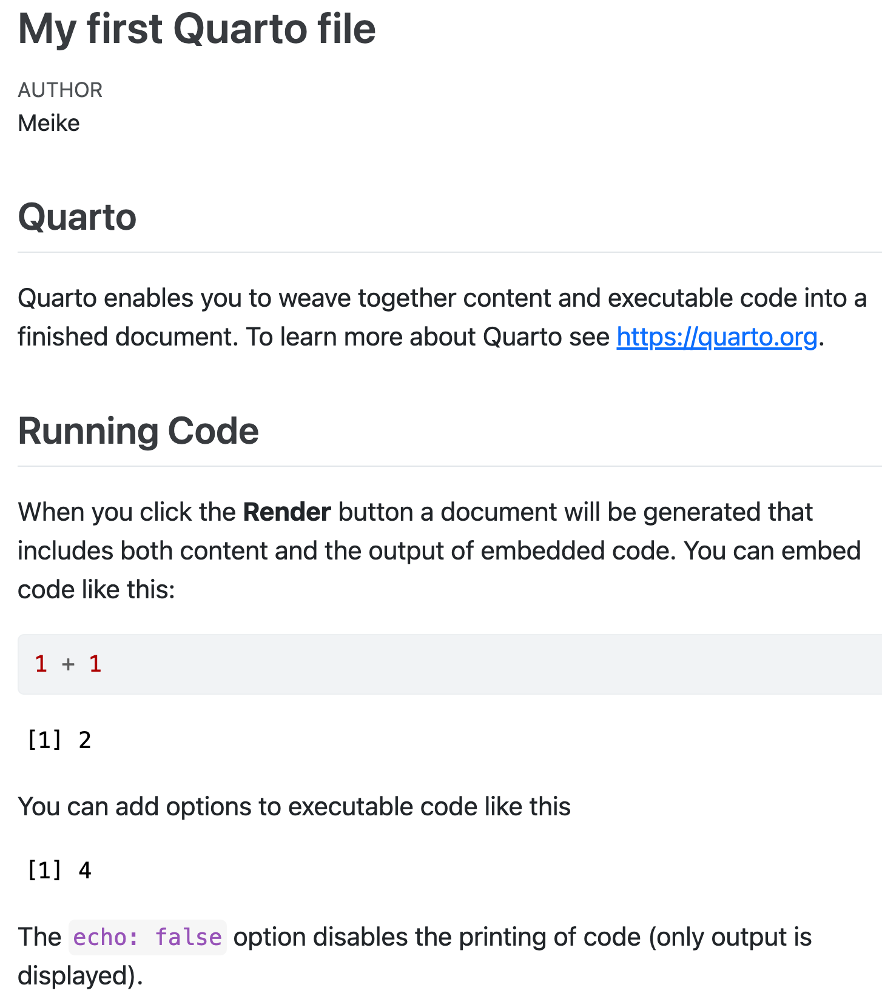

Quarto and .qmd’s
What is Quarto?
- Quarto is a publishing system that lets us combine text and code into a single document
- It is the successor to R Markdown — you may see both names online, but we’ll use Quarto

.qmd file = code + text
A .qmd file holds two things together:
- Code (R or other languages) — the same code you’d write in a script
- Text (like you’d write in Word) — headings, explanations, formatting
When you render the file, Quarto combines them into a polished output: .html, .pdf, .docx, and more.

3 types of content in a .qmd
Every .qmd file is made up of exactly three things:
- YAML metadata — settings at the top of the file (title, author, output format)
- Text — plain writing, lists, images, links
- Code chunks — blocks of R (or other) code
We’ll look at each one in detail — but first, let’s see them all together in a real example.

A complete .qmd file
Here’s what a full .qmd file looks like — we’ll break down each piece next.
---
title: "Hello, Penguins"
format: html
execute:
echo: false
---
## Meet the penguins
The `penguins` data contains size measurements for
penguins from three islands in the Palmer Archipelago,
Antarctica.
```{r}
#| label: fig-penguins
#| warning: false
pacman::p_load(tidyverse, palmerpenguins)
penguins |>
ggplot(aes(x = flipper_length_mm, y = bill_length_mm)) +
geom_point(aes(color = species)) +
theme_minimal()
```1. YAML metadata
The YAML block sits at the very top of the file, between
---linesIt controls settings like title, author, and output format
--- title: "Hello, Penguins" format: html execute: echo: false ---More YAML options on Quarto website
What you’ll see in your practice assignments
---
title: "Practice 2"
subtitle: "PUBH 523/623"
author: "Your name here"
date-modified: "today"
format:
html:
link-external-newwindow: true
toc: true
self-contained: true
page-layout: full
html-math-method: mathjax
editor_options:
chunk_output_type: console
---2. Text
Outside of code chunks, you write plain text using Markdown formatting:
## This is a heading
### This is a subheading
This is a regular paragraph. You can make text **bold** or *italic*.
- This is a bullet point
- Another bullet point- More R Markdown capabilities
- rmarkdown Cheatsheet
- In RStudio: Help → Markdown Quick Reference
Tip: Use the Visual Editor (top of the editor window) for a Word-like experience if you prefer not to write raw Markdown yet.
3. Code chunks
Code chunks are where your R code lives
```{r}
#| label: fig-penguins
#| warning: false
penguins |>
ggplot(aes(x = flipper_length_mm, y = bill_length_mm)) +
geom_point(aes(color = species))
```- There are 3 options to insert a new code chunk:
- Click the
 button at the top of the editor
button at the top of the editor - Keyboard shortcut: Command + Option + I (Mac) / Ctrl + Alt + I (PC)
- Type out
```{r}to start and```to close
Code chunk options
You can control how a chunk behaves with #| options at the top of the chunk:
| Option | What it does |
|---|---|
echo: false |
Hides the code in output (results still show) |
warning: false |
Hides warnings from the output |
include: false |
Hides both code and results (still runs) |
eval: false |
Don’t run the code (no output) |
```{r}
#| echo: false
#| warning: false
#| eval: false
```- 1
- This is helpful if you do not want to show your code
- 2
-
This is helpful if your
qmdfile has code that doesn’t work or takes a long time to run, but you still want to render the document
Making a .qmd file: overview
Four steps:
- Create a new Quarto file
- Edit the file
- Save the file
- Render to create the
.htmloutput
Step 1: Create a Quarto file
Two options:
File→New File→Quarto Document...→OK- Click in the upper left →

In the pop-up window:
- Enter a title and your name
- Output format:
HTML - Engine:
Knitr - Editor:
Use visual markdown editor - Click
Create

Step 2: Edit the file
- After clicking
Create, a template.qmdopens in your editor - Try editing the title in the YAML, or changing the text below it
- Make sure you only edit content at and below the
---that ends the YAML

Step 3: Save the file
File→Save- Click
 above the editor window
above the editor window - Keyboard shortcut: Ctrl + S (PC) / Command + S (Mac)
When saving, specify:
- Filename — always use
.qmdas the extension - Folder — save under your lessons folder as
lesson#_quarto_work.qmd
Step 4: Render to HTML
Rendering turns your .qmd into a viewable .html file.
Two options:
- Click the Render icon at the top of the editor
- Keyboard shortcut: Command + Shift + K (Mac) / Ctrl + Shift + K (PC)
After rendering:
- A new window opens with the HTML output
- Both
.qmdand.htmlfiles appear in your folder — the HTML takes its name from the.qmd
.qmd vs. .html output
- In this class, you’ll turn in both files
- Collaborators typically only need the
.html— they can view results without running any code themselves
.qmd file
.html output

Tips: Customizing your setup
Where does the HTML preview open?
Preview in Window— opens in a browser tabPreview in Viewer Pane— opens in the bottom-right RStudio pane
Where does code output appear?
Chunk Output Inline— output appears below the chunk in the editorChunk Output in Console— output appears in the Console pane

Wrap-up
- We learned about Quarto and
.qmdfiles, which combine text and code into a single document
- We explored the three main components of a
.qmdfile:- YAML metadata
- Text
- Code chunks
- We practiced creating, editing, saving, and rendering a
.qmdfile to produce an HTML output
Resources
- More YAML options on Quarto website
- rmarkdown Cheatsheet
- Publish and Share with Quarto
- Quarto: The Practical Guide by by Mine Çetinkaya-Rundel and Charlotte Wickham
- To learn more about working with Quarto, check out our BERD workshop: Creating Professional Presentations and Websites using R/Quarto